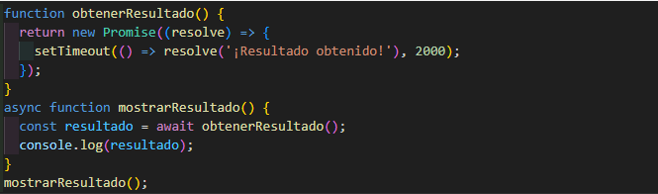

- ¿QUE HACEN ASYNC Y AWAIT POR NOSOTROS?
Piensa en async y await como una pareja dinámica que trabaja junta para hacer que tu código asincrónico sea más fácil de entender y manejar.
async: Imagina que estás en una fila para comprar helado. Cuando agregas la palabra clave async antes de una función, estás diciendo que esta función puede hacer una pausa y esperar algo, pero no se detendrá por completo. Es como si la persona que está comprando helado te diga "Espérame un momento, tengo que hacer una llamada rápida, pero seguiré esperando en la fila contigo".
async function comprarHelado() {
// Código para comprar helado...
}
Con async, la función se ejecuta de manera asíncrona, lo que significa que puede continuar con otras tareas mientras espera que se resuelva una promesa, por ejemplo
await: Ahora, imagina que la persona que está comprando helado recibe una llamada telefónica importante mientras está en la fila. En lugar de ignorar la llamada y seguir adelante, utiliza la palabra clave await para pausar la función y esperar hasta que la llamada termine. Es como si dijera "Espera un momento, necesito tomar esta llamada, pero no te preocupes, continuaré en la fila después".
async function comprarHelado() {
const llamada = await responderLlamada();
// Continuar comprando helado después de la llamada...
}
Con await, la función se detiene y espera a que una promesa se resuelva antes de continuar con el siguiente bloque de código. Esto hace que el código asincrónico se vea más como código síncrono, lo que lo hace mucho más fácil de entender y mantener.
Una gran ventaja de usar async y await es que facilitan el manejo de errores en código asincrónico. Puedes usar try-catch para capturar y manejar los errores de manera más clara y concisa.
En este ejemplo, try-catch envuelve el código asincrónico, lo que permite capturar cualquier error que ocurra durante la ejecución de las promesas.
Puedes usar async y await con funciones existentes que devuelven promesas. Esto te permite integrar fácilmente el nuevo código asincrónico con el código existente.

la función mostrarResultado() utiliza await para esperar a que se resuelva la promesa devuelta por obtenerResultado() antes de mostrar el resultado.
Aunque async y await hacen que el código asincrónico sea más legible, es importante tener en cuenta que puede haber un ligero impacto en el rendimiento debido a la naturaleza de la espera de promesas. Sin embargo, en la mayoría de los casos, la diferencia de rendimiento es insignificante y la claridad del código compensa con creces cualquier pequeña pérdida de rendimiento.
Las funciones async y await son compatibles con la mayoría de los navegadores modernos, pero es posible que encuentres problemas de compatibilidad si necesitas admitir versiones más antiguas de los navegadores. En esos casos, puedes utilizar herramientas como Babel para transpilar tu código a una forma compatible con versiones anteriores de JavaScript.
async y await son herramientas poderosas que hacen que el código asincrónico en JavaScript sea más fácil de leer, escribir y mantener. Su integración con el manejo de errores, compatibilidad con funciones existentes y rendimiento general los convierten en una opción sólida para el desarrollo de aplicaciones modernas en la web.
Aunque las funciones async y await facilitan la escritura de código asincrónico, es importante recordar que, por defecto, el código que espera una promesa con await se ejecuta de manera secuencial. Sin embargo, puedes aprovechar el paralelismo utilizando múltiples await en diferentes promesas si no tienen dependencias entre sí.
obtenerDatosDeAPI1() y obtenerDatosDeAPI2() se ejecutan en paralelo, lo que puede mejorar el rendimiento cuando las operaciones son independientes entre sí.
Una limitación de las funciones async y await es que no proporcionan una forma nativa de cancelar una promesa en medio de su ejecución. Sin embargo, existen bibliotecas de terceros, como axios, que ofrecen funcionalidades de cancelación de promesas.
Al depurar código que utiliza async y await, es importante tener en cuenta que los errores dentro de las promesas se propagarán como excepciones y pueden ser manejados utilizando bloques try-catch. Sin embargo, ten en cuenta que los errores en las promesas rechazadas pueden no ser inmediatamente evidentes si no se capturan adecuadamente.
Aunque async y await son herramientas poderosas, es posible que encuentres situaciones donde las funciones generadoras (function* y yield) son más adecuadas. Las funciones generadoras son útiles cuando necesitas generar secuencias de valores de manera diferida o cuando deseas crear iteradores personalizados.
Aunque async y await son una forma moderna y conveniente de trabajar con código asincrónico, es importante recordar que existen otros patrones y técnicas asincrónicas en JavaScript, como callbacks y Promesas. Puedes mezclar y combinar estos patrones según sea necesario en tu código.
Mientras que async y await pueden facilitar la escritura de código asincrónico, también es importante considerar el desempeño y la escalabilidad de tu aplicación. El uso excesivo de await puede conducir a un código que se ejecuta de manera síncrona, lo que puede afectar negativamente el rendimiento de la aplicación, especialmente en aplicaciones de alta carga.
Al usar await dentro de métodos de objetos o clases, es importante recordar que el contexto de this dentro de la función await puede ser diferente al contexto de this fuera de la función await. Puedes necesitar enlazar explícitamente el contexto de this si necesitas acceder a propiedades o métodos del objeto o clase.
Cuando trabajas con bucles en funciones async, es importante recordar que await no funciona de la misma manera que en código síncrono. En un bucle for, por ejemplo, todas las iteraciones se ejecutarán simultáneamente si se utilizan await dentro del bucle. Puedes necesitar usar técnicas como el uso de Promise.all() o funciones recursivas para manejar este comportamiento de manera efectiva.
PARA MAYOR INFORMACION
https://developer.mozilla.org/en-US/docs/Web/JavaScript/Reference/Statements/async_function
https://javascript.info/async-await
https://www.w3schools.com/js/js_async.asp